Moviendo al país
Cincuenta años, desde 1976, llevando sobre nuestros lomos de metal la confianza y el futuro de los colombianos.
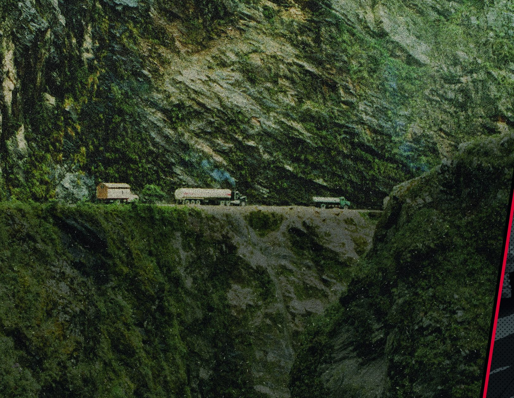
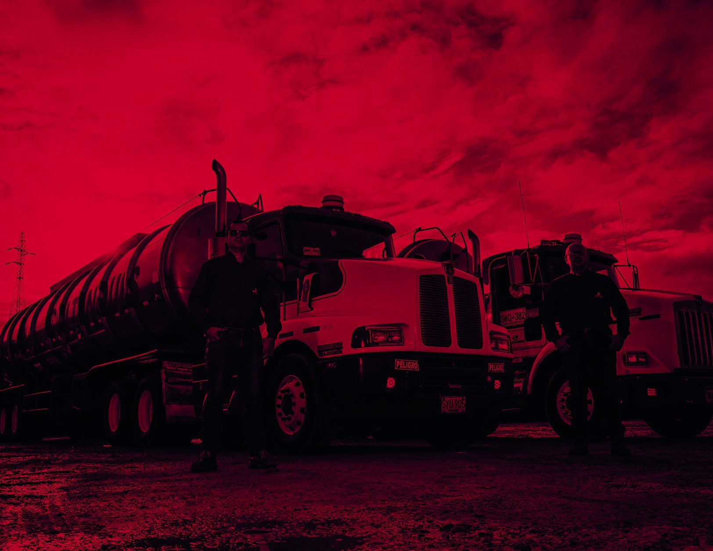
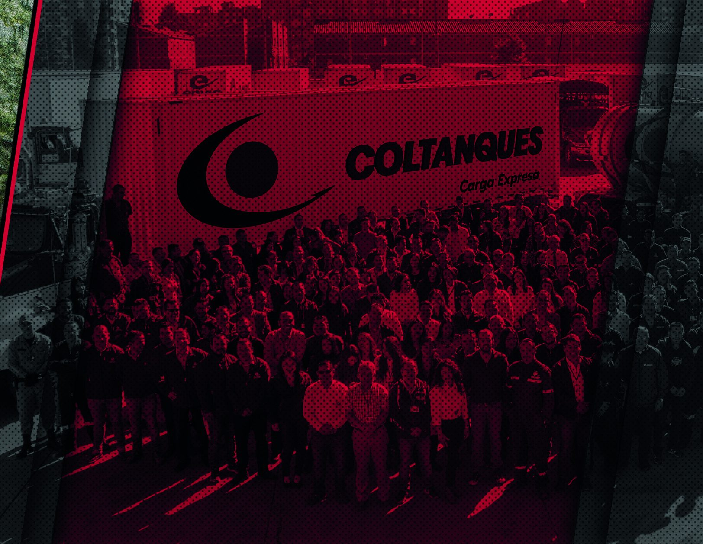
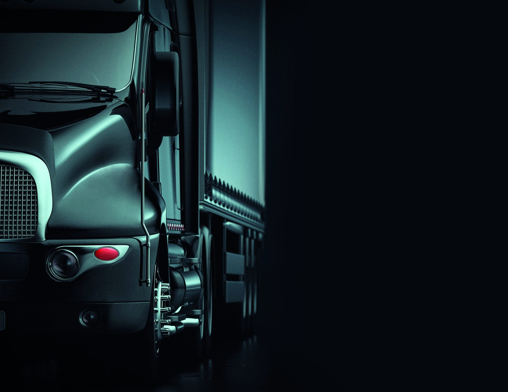
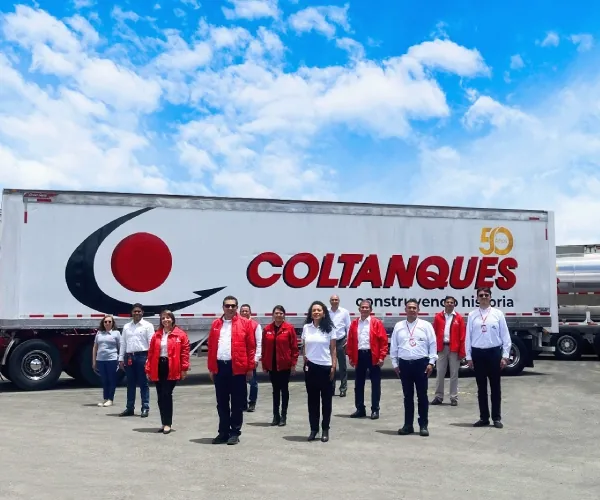
Quiénes somos
Un sueño que empezó en el 76 llevando crudo por un país ansioso por crecer. Cada camino lleva la huella de nuestros neumáticos.
Hoy somos una compañía de logística y transporte de carga con presencia en 12 ciudades, bodegas propias y una flota que cruza la frontera con Ecuador. Seguimos construyendo país, un despacho a la vez.
Nuestra historia
Seis épocas de una misma carretera.
1976
Nace Colombiana de Tanques, Coltanques, con una flota de cinco vehículos Ford modelo 71 de 28 toneladas de capacidad y una oficina en el barrio Ricaurte de Bogotá. Esos primeros años marcaron el comienzo de un viaje lleno de retos que forjó nuestra identidad: llevar la carga que el país necesita para crecer y, con ella, los sueños de quienes hacen parte de esta familia.
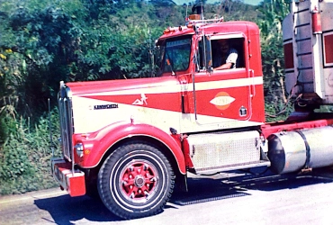
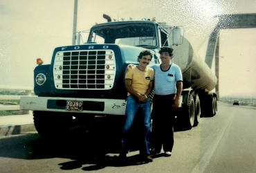
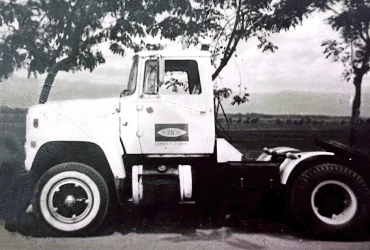
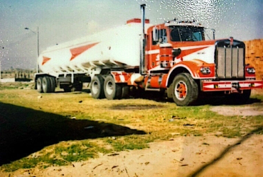
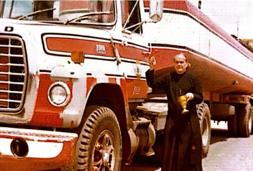
1980–1990
El transporte por carretera gana un peso enorme en la economía nacional. Abrimos sedes regionales en Duitama y Barrancabermeja y, más tarde, llegamos a Venezuela y Ecuador.
- 1980Trasladamos la operación del barrio Ricaurte a una sede en la avenida 38 con Américas.
- 1982Movilizamos crudo desde el Campo Dina, en el Huila, y líquido blanco como aceite de palma.
- 1984Ganamos la licitación de transporte de crudo de Araguaney a Barrancabermeja, por la antigua vía Yopal–Pajarito–Sogamoso.
- 1985Transportamos crudo comprado en el pozo de Castilla para comercializadoras internacionales.
- 1986Entramos al transporte de carga seca y nos convertimos en pioneros del servicio.
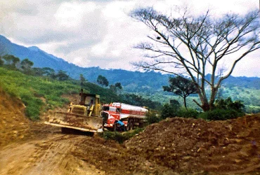
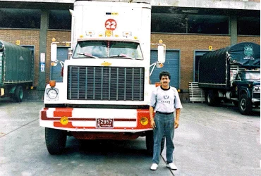
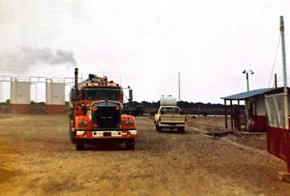
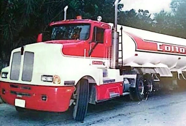
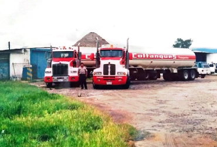
1990–2000
El auge petrolero y la consolidación de la flota de terceros impulsan un gran crecimiento. Abrimos agencias regionales en Barranquilla, Bucaramanga, Buenaventura, Medellín, Manizales y Cali.
- 1990Construimos la sede de 25.000 m² en la calle 13 de Bogotá, donde operamos desde entonces.
- 1991Iniciamos la alianza con Kenworth de la Montaña con los primeros 20 tractocamiones T800.
- 1996Creamos Colvanes, hoy Envía, para el transporte de mercancías en paqueteo y distribución.
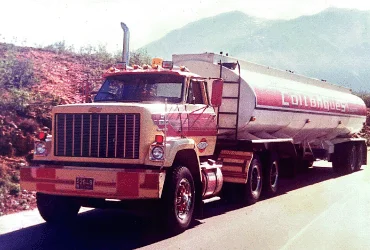
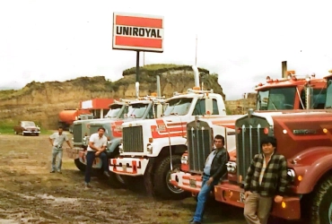
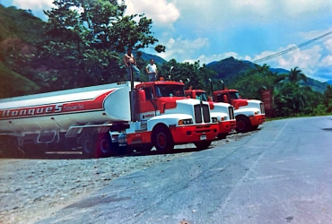
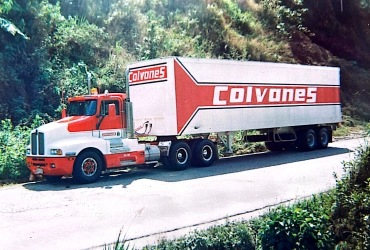
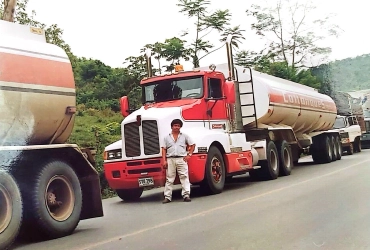
2000–2010
Con el nuevo milenio iniciamos un proceso de expansión y consolidación, con soluciones integrales en carga líquida y seca.
- 2003Obtenemos la certificación BASC, la alianza empresarial internacional para un comercio seguro.
- 2005Adoptamos el logotipo actual de Coltanques.
- 2009Iniciamos el proyecto de renovación de flota para todas las operaciones.
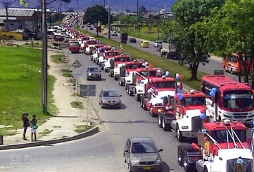
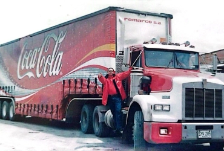
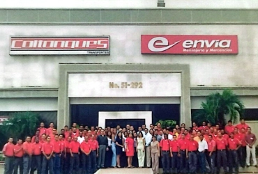
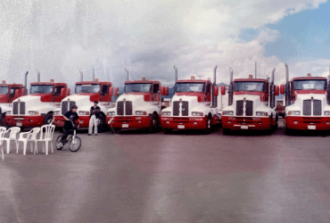
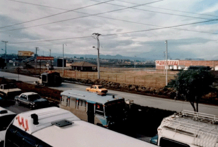
2010–2020
Fortalecemos la infraestructura, llegamos a nuevas regiones como Ipiales y modernizamos la flota para ofrecer soluciones integrales en todo el país.
- 2012Entre 2010 y 2012 incorporamos 500 tractocamiones Kenworth T800 y T600.
- 2014Hacemos el primer despacho internacional de Coltanques hacia Ecuador.
- 2015Comenzamos almacenamiento y distribución con bodegas en Medellín, Cali, Pereira, Cartagena y Buenaventura.
- 2022Entre 2020 y 2022 incorporamos vehículos de norma Euro 5.
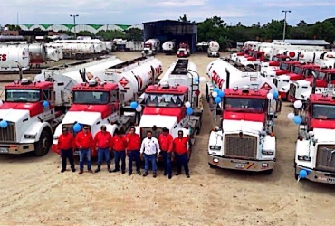
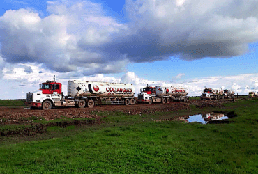


50 años
En 2026 Coltanques cumple 50 años. Honramos el legado de nuestro fundador, Henry Cubides Olarte, y reafirmamos el compromiso de seguir construyendo país. Gracias por ser parte de este viaje: quedan muchos años de historia por delante.
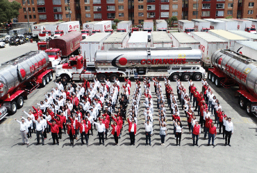
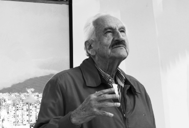
Nuestro fundador
Henry Cubides Olarte fundó Coltanques en 1976 con cinco camiones y la convicción de que el transporte de carga podía construir país. Cincuenta años después, su visión sigue marcando el rumbo de la compañía.
Misión y visión
Misión
Somos aliados estratégicos en logística y transporte de carga en los diferentes sectores de la economía, garantizando soluciones integrales para la satisfacción de nuestros clientes y promoviendo el desarrollo del país, de nuestros clientes, colaboradores, accionistas y proveedores.
Visión
Ser una compañía de servicios integrales en operación logística de clase mundial.
Nuestros pilares
Cinco ideas que guían cómo trabajamos, en la oficina y en la carretera.
Bienestar
Necesitamos que nuestra gente siempre esté bien.
Pensamiento innovador
Desafiamos la manera en que trabajamos y generamos ideas para que todos lo hagamos mejor.
Sostenibilidad
Trabajamos para que nuestros indicadores sean sobresalientes; eso nos hará perdurables en el tiempo.
Servir
Es la actitud y la disposición de ser útil.
Trabajo en equipo
Como en un equipo de fútbol: nos importa el desempeño del otro, trabajamos alineados y el resultado es de todos.
Sostenibilidad
Programas de bienestar y desarrollo social para nuestros grupos de interés, organizados en tres ejes.
- 6.000
Economía circular
Personas beneficiadas con programas como Tapas para sanar y el ecodiseño de la dotación.
- 450
Cuidado integral a comunidades
Personas atendidas con programas de salud y seguridad alimentaria.
- 300
Apoyo a la educación
Personas beneficiadas, de la primera infancia a la educación superior.
Gestión ambiental
Reducimos nuestro impacto transformando las dotaciones en desuso en nuevos productos.
Seguridad vial
Nuestro Plan Estratégico de Seguridad Vial cuida a conductores, comunidades y carga.
Gobierno corporativo
Las políticas con las que Coltanques cumple la ley, protege los datos y opera con ética.
Datos personales
Operación responsable
Trabaja con nosotros
Más de 6.000 personas hacen posible cada despacho. Hay un lugar para usted en la oficina o al volante.